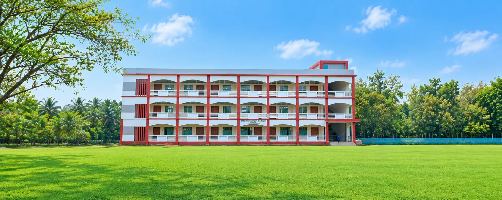

ইউনিয়নের তথ্য বাতায়ন
১২ নং মদনপুর ইউনিয়ন
আমাদের ইউনিয়ন, আমাদের পরিচয় ও আমাদের সম্ভাবনার ডিজিটাল ঠিকানা।
ইউনিয়ন সম্পর্কে
সব দেখুনপ্রতিষ্ঠান
সব দেখুন
সাজিউড়া মফিলা ফয়েজ আদর্শ উচ্চ বিদ্যালয়
মাধ্যমিক বিদ্যালয়
মদনপুর, ১ নং ওয়ার্ড
প্রথম থেকে পঞ্চম শ্রেণি পর্যন্ত শিক্ষার্থীদের পাঠদান করা হয়।
বিস্তারিত দেখুনগুরুত্বপূর্ণ স্থান
সব দেখুনসাইটউড়ি নদী ঘাট ও ভেসাল জাল
প্রাকৃতিক
নদীপাড়, ৭ নং ওয়ার্ড
নদীপাড় গ্রামের পাশ দিয়ে বয়ে চলা নদীর এই ঘাটটি ইউনিয়নের সবচেয়ে সুন্দর স্থানগুলোর একটি। ভোরে ও বিকেলে জেলেরা ভেসাল জাল দিয়ে মাছ ধরেন। বিকেলে অনেকে এখানে...
বিস্তারিত দেখুনযাচাইকৃত অভিযোগ
সব দেখুনবাজারের পাশের ড্রেন বন্ধ হয়ে পানি জমে আছে
যাচাইকৃত
মদনপুর, ১ নং ওয়ার্ড
৬ অক্টোবর ২০২৬
অভিযোগকারী: রফিকুল ইসলাম (নমুনা)
মদনপুর বাজারের পূর্ব পাশের ড্রেনটি দীর্ঘদিন পরিষ্কার না করায় ময়লায় বন্ধ হয়ে গেছে। সামান্য বৃষ্টিতেই রাস্তায় পানি জমে যায় এবং দুর্গন্ধ ছড়ায়। দ্রুত পরিষ্ক...
বিস্তারিত দেখুনএলাকার প্রয়োজন
সব দেখুন
সেতু / কালভার্ট
অনুমোদিত
জেলেপাড়া ও নদীপাড়ের মাঝে খালের উপর সেতু প্রয়োজন
জেলেপাড়া, ৭ নং ওয়ার্ড
৬ অক্টোবর ২০২৬
জেলেপাড়া ও নদীপাড় গ্রামের মাঝখানের খালের উপর বর্তমানে একটি বাঁশের সাঁকো রয়েছে। বর্ষায় সাঁকোটি ঝুঁকিপূর্ণ হয়ে পড়ে এবং শিক্ষার্থীসহ প্রায় দুই হাজার মানুষের...
বিস্তারিত দেখুনআপনার এলাকার তথ্য দিয়ে সহযোগিতা করুন
প্রতিষ্ঠান, গুরুত্বপূর্ণ স্থান, অভিযোগ বা এলাকার উন্নয়ন চাহিদার তথ্য জমা দিন। যাচাইয়ের পর তা সবার জন্য প্রকাশ করা হবে।
তথ্য দিন